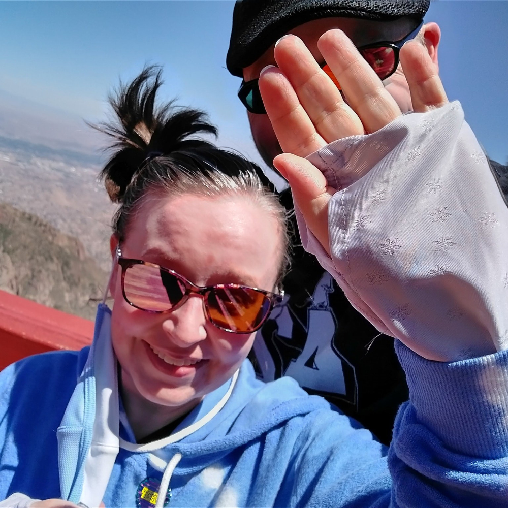

I moved to Albuquerque in 2021 after a lifetime of living in Alabama. I did not like it there, so I always joked that I escaped. But it really feels like I did. I always dread going back. I have nightmares and migraines about it.
When I lived there, I fostered around 30 dogs in the span of 8 years until they found forever homes. I only stopped so that I could focus on college. Now we have a lab mix and a kind-of special needs Heeler mix, so we're not fostering at this time. Bear (the Heeler mix) takes a lot of management to be ok. I do miss fostering, though, and hope to get back to it one of these days.
I think this picture of me and my husband is funny. This was our first visit to Albuquerque. You can see by my pin that we'd just had our first balloon ride earlier that morning. My husband took the photo, and I put up my hand to block the sun, not realizing that I was blocking his face. Haha.
